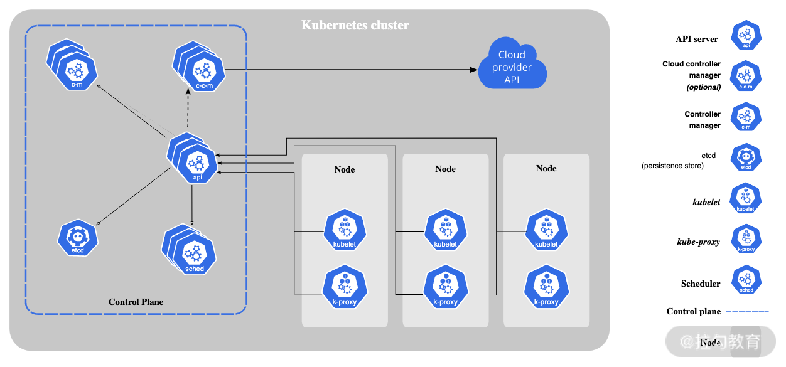
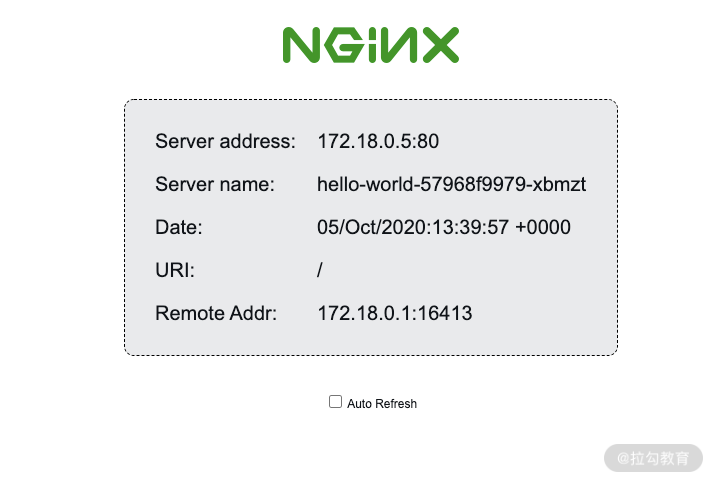

- 00 溯本求源，吃透 Docker！.md.html
- 01 Docker 安装：入门案例带你了解容器技术原理.md.html
- 02 核心概念：镜像、容器、仓库，彻底掌握 Docker 架构核心设计理念.md.html
- 03 镜像使用：Docker 环境下如何配置你的镜像？.md.html
- 04 容器操作：得心应手掌握 Docker 容器基本操作.md.html
- 05 仓库访问：怎样搭建属于你的私有仓库？.md.html
- 06 最佳实践：如何在生产中编写最优 Dockerfile？.md.html
- 07 Docker 安全：基于内核的弱隔离系统如何保障安全性？.md.html
- 08 容器监控：容器监控原理及 cAdvisor 的安装与使用.md.html
- 09 资源隔离：为什么构建容器需要 Namespace ？.md.html
- 10 资源限制：如何通过 Cgroups 机制实现资源限制？.md.html
- 11 组件组成：剖析 Docker 组件作用及其底层工作原理.md.html
- 12 网络模型：剖析 Docker 网络实现及 Libnetwork 底层原理.md.html
- 13 数据存储：剖析 Docker 卷与持久化数据存储的底层原理.md.html
- 14 文件存储驱动：AUFS 文件系统原理及生产环境的最佳配置.md.html
- 15 文件存储驱动：Devicemapper 文件系统原理及生产环境的最佳配置.md.html
- 16 文件存储驱动：OverlayFS 文件系统原理及生产环境的最佳配置.md.html
- 17 原理实践：自己动手使用 Golang 开发 Docker（上）.md.html
- 18 原理实践：自己动手使用 Golang 开发 Docker（下）.md.html
- 19 如何使用 Docker Compose 解决开发环境的依赖？.md.html
- 20 如何在生产环境中使用 Docker Swarm 调度容器？.md.html
- 21 如何使 Docker 和 Kubernetes 结合发挥容器的最大价值？.md.html
- 22 多阶级构建：Docker 下如何实现镜像多阶级构建？.md.html
- 23 DevOps：容器化后如何通过 DevOps 提高协作效能？.md.html
- 24 CICD：容器化后如何实现持续集成与交付？（上）.md.html
- 25 CICD：容器化后如何实现持续集成与交付？（下）.md.html
- 26 结束语 展望未来：Docker 的称霸之路.md.html
21 如何使 Docker 和 Kubernetes 结合发挥容器的最大价值？
Docker 虽然在容器领域有着不可撼动的地位，然而在容器的编排领域，却有着另外一个事实标准，那就是 Kubernetes。本课时，我就带你一起来认识下 Kubernetes。
Kubernetes 的前生今世
说起 Kubernetes，这一切还得从云计算这个词说起，云计算这个概念是 2006 年由 Google 提起的，近些年被提及的频率也越来越高。云计算从起初的概念演变为现在的 AWS、阿里云等实实在在的云产品（主要是虚拟机和相关的网络、存储服务），可见已经变得非常成熟和稳定。
正当大家以为云计算领域已经变成了以虚拟机为代表的云平台时，Docker 在 2013 年横空出世，Docker 提出了镜像、仓库等核心概念，规范了服务的交付标准，使得复杂服务的落地变得更加简单，之后 Docker 又定义了 OCI 标准，可以说在容器领域 Docker 已经成了事实的标准。
然而 Docker 诞生只是帮助我们定义了开发和交付标准，如果想要在生产环境中大批量的使用容器，还离不开的容器的编排技术。于是，在 2014 年 6 月 7 日，Kubernetes（Kubernetes 简称为 K8S，8 代表 ubernete 8个字母） 的第一个 commit（提交）拉开了容器编排标准定义的序幕。
Kubernetes 是舵手的意思，我们把 Docker 比喻成一个个集装箱，而 Kubernetes 正是运输这些集装箱的舵手。早期的 Kubernetes 主要参考 Google 内部的 Borg 系统，Kubernetes 刚刚诞生时，提出了 Pod、Sidecar 等概念，这些都是 Google 内部多年实战和沉淀所积累的精华。经过将近一年的沉淀和积累，Kubernetes 于 2015 年 7 月 21 日对外发布了第一个正式版本 v1.0，正式走入了大众的视线。
很荣幸，我也是在 2015 年下半年正式开始了 Kubernetes 和 Docker 的研发之路。时至今日，Kubernetes 经过 6 年的沉淀，已经成为了事实的编排技术标准。
接下来，我们就看来看看，究竟是什么样的架构使得 Kubernetes 在容器编排领域成为了王者？
Kubernetes 架构
Kubernetes 采用声明式 API 来工作，所有组件的运行过程都是异步的，整个工作过程大致为用户声明想要的状态，然后 Kubernetes 各个组件相互配合并且努力达到用户想要的状态。
Kubernetes 采用典型的主从架构，分为 Master 和 Node 两个角色。
- Mater 是 Kubernetes 集群的控制节点，负责整个集群的管理和控制功能。
- Node 为工作节点，负责业务容器的生命周期管理。
整体架构如下图：

图 1 Kubernetes 架构图（来源：Kubernetes 官网）
Master 节点
Master 节点负责对集群中所有容器的调度，各种资源对象的控制，以及响应集群的所有请求。Master 节点包含三个重要的组件： kube-apiserver、kube-scheduler、kube-controller-manager。下面我对这三个组件逐一介绍。
- kube-apiserver
kube-apiserver 主要负责提供 Kubernetes 的 API 服务，所有的组件都需要与 kube-apiserver 交互获取或者更新资源信息，它是 Kubernetes Master 中最前端组件。
kube-apiserver 的所有数据都存储在 etcd 中，etcd 是一种采用 Go 语言编写的高可用 Key-Value 数据库，由 CoreOS 开发。etcd 虽然不是 Kubernetes 的组件，但是它在 Kubernetes 中却扮演着至关重要的角色，它是 Kubernetes 的数据大脑。可以说 etcd 的稳定性直接关系着 Kubernetes 集群的稳定性，因此生产环境中 etcd 一定要部署多个实例以确保集群的高可用。
- kube-scheduler
kube-scheduler 用于监听未被调度的 Pod，然后根据一定调度策略将 Pod 调度到合适的 Node 节点上运行。
- kube-controller-manager
kube-controller-manager 负责维护整个集群的状态和资源的管理。例如多个副本数量的保证，Pod 的滚动更新等。每种资源的控制器都是一个独立协程。kube-controller-manager 实际上是一系列资源控制器的总称。
为了保证 Kubernetes 集群的高可用，Master 组件需要部署在多个节点上，由于 Kubernetes 所有数据都存在于 etcd 中，Etcd 是基于 Raft 协议实现，因此生产环境中 Master 通常建议至少三个节点（如果你想要更高的可用性，可以使用 5 个或者 7 个节点）。
Node 节点
Node 节点是 Kubernetes 的工作节点，负责运行业务容器。Node 节点主要包含两个组件 ：kubelet 和 kube-proxy。
- kubelet
Kubelet 是在每个工作节点运行的代理，它负责管理容器的生命周期。Kubelet 通过监听分配到自己运行的主机上的 Pod 对象，确保这些 Pod 处于运行状态，并且负责定期检查 Pod 的运行状态，将 Pod 的运行状态更新到 Pod 对象中。
- kube-proxy
Kube-proxy 是在每个工作节点的网络插件，它实现了 Kubernetes 的 Service 的概念。Kube-proxy 通过维护集群上的网络规则，实现集群内部可以通过负载均衡的方式访问到后端的容器。
Kubernetes 的成功不仅得益于其优秀的架构设计，更加重要的是 Kubernetes 提出了很多核心的概念，这些核心概念构成了容器编排的主要模型。
Kubernetes 核心概念
Kubernetes 这些概念是 Google 多年的技术沉淀和积累，理解 Kubernetes 的核心概念有助于我们更好的理解 Kubernetes 的设计理念。
（1）集群
集群是一组被 Kubernetes 统一管理和调度的节点，被 Kubernetes 纳管的节点可以是物理机或者虚拟机。集群其中一部分节点作为 Master 节点，负责集群状态的管理和协调，另一部分作为 Node 节点，负责执行具体的任务，实现用户服务的启停等功能。
（2）标签（Label）
Label 是一组键值对，每一个资源对象都会拥有此字段。Kubernetes 中使用 Label 对资源进行标记，然后根据 Label 对资源进行分类和筛选。
（3）命名空间（Namespace）
Kubernetes 中通过命名空间来实现资源的虚拟化隔离，将一组相关联的资源放到同一个命名空间内，避免不同租户的资源发生命名冲突，从逻辑上实现了多租户的资源隔离。
（4）容器组（Pod）
Pod 是 Kubernetes 中的最小调度单位，它由一个或多个容器组成，一个 Pod 内的容器共享相同的网络命名空间和存储卷。Pod 是真正的业务进程的载体，在 Pod 运行前，Kubernetes 会先启动一个 Pause 容器开辟一个网络命名空间，完成网络和存储相关资源的初始化，然后再运行业务容器。
（5）部署（Deployment）
Deployment 是一组 Pod 的抽象，通过 Deployment 控制器保障用户指定数量的容器副本正常运行，并且实现了滚动更新等高级功能，当我们需要更新业务版本时，Deployment 会按照我们指定策略自动的杀死旧版本的 Pod 并且启动新版本的 Pod。
（6）状态副本集（StatefulSet）
StatefulSet 和 Deployment 类似，也是一组 Pod 的抽象，但是 StatefulSet 主要用于有状态应用的管理，StatefulSet 生成的 Pod 名称是固定且有序的，确保每个 Pod 独一无二的身份标识。
（7）守护进程集（DaemonSet）
DaemonSet 确保每个 Node 节点上运行一个 Pod，当我们集群有新加入的 Node 节点时，Kubernetes 会自动帮助我们在新的节点上运行一个 Pod。一般用于日志采集，节点监控等场景。
（8）任务（Job）
Job 可以帮助我们创建一个 Pod 并且保证 Pod 的正常退出，如果 Pod 运行过程中出现了错误，Job 控制器可以帮助我们创建新的 Pod，直到 Pod 执行成功或者达到指定重试次数。
（9）服务（Service）
Service 是一组 Pod 访问配置的抽象。由于 Pod 的地址是动态变化的，我们不能直接通过 Pod 的 IP 去访问某个服务，Service 通过在主机上配置一定的网络规则，帮助我们实现通过一个固定的地址访问一组 Pod。
（10）配置集（ConfigMap）
ConfigMap 用于存放我们业务的配置信息，使用 Key-Value 的方式存放于 Kubernetes 中，使用 ConfigMap 可以帮助我们将配置数据和应用程序代码分开。
（11）加密字典（Secret）
Secret 用于存放我们业务的敏感配置信息，类似于 ConfigMap，使用 Key-Value 的方式存在于 Kubernetes 中，主要用于存放密码和证书等敏感信息。
了解完 Kubernetes 的架构和核心概念，你是不是已经迫不及待地想要体验下了。下面就让我们动手安装一个 Kubernetes 集群，来体验下 Kubernetes 的强大之处吧。
安装 Kubernetes
Kubernetes 目前已经支持在多种环境下安装，我们可以在公有云，私有云，甚至裸金属中安装 Kubernetes。下面，我们通过 minikube 来演示一下如何快速安装和启动一个 Kubernetes 集群，minikube 是官方提供的一个快速搭建本地 Kubernetes 集群的工具，主要用于本地开发和调试。
下面，我以 Linux 平台为例，演示一下如何使用 minikube 安装一个 Kubernetes 集群。
如果你想要在其他平台使用 minikube 安装 Kubernetes，请参考官网安装教程。 在使用 minikube 安装 Kubernetes 之前，请确保我们的机器已经正确安装并且启动 Docker。
第一步，安装 minikube 和 kubectl。首先执行以下命令安装 minikube。
$ curl -LO https://github.com/kubernetes/minikube/releases/download/v1.13.1/minikube-linux-amd64
$ sudo install minikube-linux-amd64 /usr/local/bin/minikube
Kubectl 是 Kubernetes 官方的命令行工具，可以实现对 Kubernetes 集群的管理和控制。 我们使用以下命令来安装 kubectl：
$ curl -LO https://dl.k8s.io/v1.19.2/kubernetes-client-linux-amd64.tar.gz
$ tar -xvf kubernetes-client-linux-amd64.tar.gz
kubernetes/
kubernetes/client/
kubernetes/client/bin/
kubernetes/client/bin/kubectl
$ sudo install kubernetes/client/bin/kubectl /usr/local/bin/kubectl
第二步，安装 Kubernetes 集群。 执行以下命令使用 minikube 安装 Kubernetes 集群：
$ minikube start
执行完上述命令后，minikube 会自动帮助我们创建并启动一个 Kubernetes 集群。命令输出如下，当命令行输出 Done 时，代表集群已经部署完成。
第三步，检查集群状态。集群安装成功后，我们可以使用以下命令检查 Kubernetes 集群是否成功启动。
$ kubectl cluster-info
Kubernetes master is running at https://172.17.0.3:8443
KubeDNS is running at https://172.17.0.3:8443/api/v1/namespaces/kube-system/services/kube-dns:dns/proxy
To further debug and diagnose cluster problems, use 'kubectl cluster-info dump'.
执行kubectl cluster-info命令后，输出 "Kubernetes master is running" 表示我们的集群已经成功运行。
172.17.0.3 为演示环境机器的 IP 地址，这个 IP 会根据你的实际 IP 地址而变化。
创建第一个应用
集群搭建好后，下面我们来试着使用 Kubernetes 来创建我们的第一个应用。
这里我们使用 Deployment 来定义应用的部署信息，使用 Service 暴露我们的应用到集群外部，从而使得我们的应用可以从外部访问到。
第一步，创建 deployment.yaml 文件，并且定义启动的副本数（replicas）为 3。
apiVersion: apps/v1
kind: Deployment
metadata:
name: hello-world
spec:
replicas: 3
selector:
matchLabels:
app: hello-world
template:
metadata:
labels:
app: hello-world
spec:
containers:
- name: hello-world
image: wilhelmguo/nginx-hello:v1
ports:
- containerPort: 80
第二步，发布部署文件到 Kubernetes 集群中。
$ kubectl create -f deployment.yaml
部署发布完成后，我们可以使用 kubectl 来查看一下 Pod 是否被成功启动。
$ kubectl get pod -o wide
NAME READY STATUS RESTARTS AGE IP NODE NOMINATED NODE READINESS GATES
hello-world-57968f9979-xbmzt 1/1 Running 0 3m19s 172.18.0.7 minikube <none> <none>
hello-world-57968f9979-xq5w4 1/1 Running 0 3m18s 172.18.0.5 minikube <none> <none>
hello-world-57968f9979-zwvgg 1/1 Running 0 4m14s 172.18.0.6 minikube <none> <none>
这里可以看到 Kubernetes 帮助我们创建了 3 个 Pod 实例。
第三步，创建 service.yaml 文件，帮助我们将服务暴露出去，内容如下：
apiVersion: v1
kind: Service
metadata:
name: hello-world
spec:
type: NodePort
ports:
- port: 80
targetPort: 80
selector:
app: hello-world
服务创建完成后，Kubernetes 会随机帮助我们分配一个外部访问端口，可以通过以下命令查看服务信息：
$ kubectl get service -o wide
NAME TYPE CLUSTER-IP EXTERNAL-IP PORT(S) AGE SELECTOR
hello-world NodePort 10.101.83.18 <none> 80:32391/TCP 12s app=hello-world
kubernetes ClusterIP 10.96.0.1 <none> 443/TCP 40m <none>
由于我们的集群使用 minikube 安装，要想集群中的服务可以通过外部访问，还需要执行以下命令：
$ minikube service hello-world
输出如下：
可以看到 minikube 将我们的服务暴露在了 32391 端口上，我们通过 http://{YOUR-IP}:32391 可以访问到我们启动的服务，如下图所示。

图 2 服务请求结果
总结下，我们首先使用 Deployment 创建了三个 nginx-hello 的实例，然后使用 Service 的方式随机负载到后端的三个实例，并将服务通过 NodePort 的方式暴露在主机上，使得我们可以直接使用主机的端口访问到容器中的服务。
结语
Kubernetes 从诞生到现在已经经历了 6 个年头，起初由于它的超前理念被世人误认为设计过度复杂，使得 Kubernetes 的入门门槛非常高。然而 6 年后的今天， Kubernetes 已经拥有了非常完善的社区和工具集，它可以帮助我们一键搭建 Kubernetes 集群，并且围绕 Kubernetes 构建的各种应用也是越来越丰富。
Kubernetes 的目标一直很明确，那就是对标 Borg，可以支撑数亿容器的运行。目前来看，要达到这个目标，Kubernetes 还有很长的路要走，但是当我们谈及云原生，谈及容器云时都必然会提到 Kubernetes，显然它已经成为容器编排的标准和标杆，目前大多数公有云也有支持 Kubernetes。容器的未来一定是美好的，而使用 Kubernetes 来调度容器则更是未来云计算的一个重要风向标。
那么，你的朋友中有没有人从事过 Kubernetes 或 Docker 相关的项目研发，现在这些项目发展得怎么样了呢？欢迎留言和我一起讨论容器圈创业那点事。
下一课时，我将为你带来 Docker 的综合实战案例，Docker 下如何实现镜像多阶级构建？